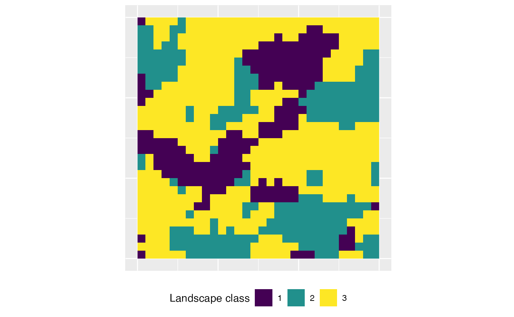
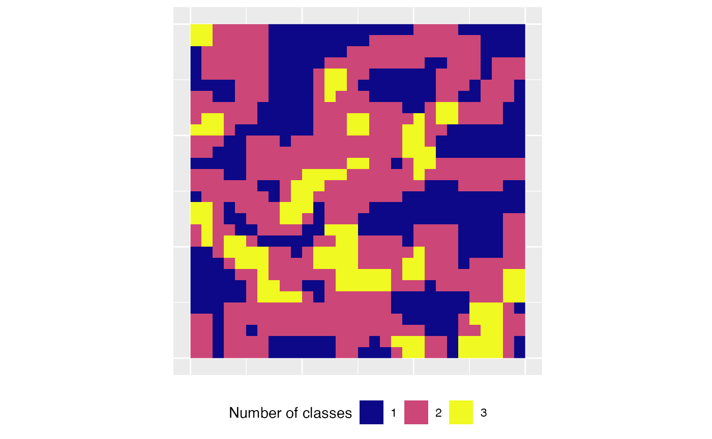

Results of a landscape analysis are scale dependent (Šímová 2012). One approach to deal with this is by using a moving window (Hagen-Zanker 2016). For each focal cell in the landscape, a matrix is used to specify the neighborhood and the metric value of this local neighborhood is assigned to each focal cell (Fletcher 2018). Thereby, the windows are allowed to overlap (McGarigal et al. 2012). The result of a moving window analysis is a raster with an identical extent as the input, however, each cell now describes the neighborhood in regard to the variability of the chosen metric (Hagen-Zanker 2016). Of course, the selection of the matrix size largely influences the scale of the result (Hagen-Zanker 2016).
We provide the function window_lsm() in landscapemetrics to analyse an input raster using the moving window approach. The function allows to specify the neighborhood using a matrix using the raster::focal() function internally. Currently, only the landscape level metrics are possible to calculate and they can be specified similarly to calculate_lsm(). For details, see ?list_lsm().
First, we need to specify the local neighborhood matrix. This matrix must have sides defined as odd numbers, in which the focal cell is always the center cell. Because we want to weight all cells identically, all values need to be 1 (for more details, see ?raster::focal()).
moving_window <- matrix(1, nrow = 3, ncol = 3)
moving_window## [,1] [,2] [,3]
## [1,] 1 1 1
## [2,] 1 1 1
## [3,] 1 1 1Now, we can easily pass this matrix to window_lsm() together with the input landscape. For this example, we want to calculate the number of classes (lsm_l_pr) and the joint entropy (lsm_l_joinent) for the local neighborhoods.
result <- window_lsm(landscape, window = moving_window, what = c("lsm_l_pr", "lsm_l_joinent"))
result## $layer_1
## $layer_1$lsm_l_joinent
## class : RasterLayer
## dimensions : 30, 30, 900 (nrow, ncol, ncell)
## resolution : 1, 1 (x, y)
## extent : 0, 30, 0, 30 (xmin, xmax, ymin, ymax)
## crs : NA
## source : memory
## names : layer
## values : 0, 3.093069 (min, max)
##
##
## $layer_1$lsm_l_pr
## class : RasterLayer
## dimensions : 30, 30, 900 (nrow, ncol, ncell)
## resolution : 1, 1 (x, y)
## extent : 0, 30, 0, 30 (xmin, xmax, ymin, ymax)
## crs : NA
## source : memory
## names : layer
## values : 1, 3 (min, max)To be type-stable, the result will be a nested list. The first level includes all layers of a RasterStack (only one if a RasterLayer is provided), the second level all selected metrics. The resulting RasterLayers describe the local neighborhood according to the moving window around each focal cell. In the case of lsm_l_pr this the number of classes present.

In the future, we also plan to allow class level metrics, however, patch metrics are not meaningful (McGarigal 2012) and will not be included in the future.
Fletcher, R., Fortin, M.-J. 2018. Spatial Ecology and Conservation Modeling: Applications with R. Springer International Publishing. 523 pages
Hagen-Zanker, A. 2016. A computational framework for generalized moving windows and its application to landscape pattern analysis. International journal of applied earth observation and geoinformation, 44, 205-216.
McGarigal, K., Cushman, S.A., and Ene E. 2012. FRAGSTATS v4: Spatial Pattern Analysis Program for Categorical and Continuous Maps. Computer software program produced by the authors at the University of Massachusetts, Amherst. Available at the following website: http://www.umass.edu/landeco/research/fragstats/fragstats.html
Šímová, P., & Gdulová, K. 2012. Landscape indices behavior: A review of scale effects. Applied Geography, 34, 385–394.